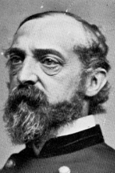

|

|

|
|
|
Union general George Gordon Meade was born on December 31,
1815, in Cadiz, Spain to Margaret Butler and Richard Worsam
Meade (a prominent Philadelphia merchant). The ninth of
eleven children, Meade spent much of his boyhood in
Pennsylvania. His father's financial losses and premature
death forced Meade to pursue a military education and a
career in engineering. Graduating from West Point in 1835,
he served in the Seminole War, subsequently leaving the Army
for eight years to work as a civil engineer. Marriage (to
Margaret Sergeant, the daughter of Representative John
Sergeant of Philadelphia) and fatherhood prompted Meade to
return to the service in 1842. With the assistance of his
brother-in-law, Representative Henry A. Wise of Virginia, he
was appointed second lieutenant in the Corps of
Topographical Engineers where his duties included
construction of lighthouses and breakwaters.
Meade fought in the Mexican War (alongside fellow
engineers Robert E. Lee and Joseph E. Johnston), earning a
brevet to first lieutenant for his work during the siege of
Vera Cruz. In August 1861, Meade (a captain with
influential political connections in his home state)
received command of a Pennsylvania brigade.
Meade's brigade joined the Army of the Potomac in June
1862 for General George B. McClellan's ill-fated Peninsula
campaign. Serving in the same division as friend and fellow
Pennsylvanian General John F. Reynolds, Meade fought at
Mechanicsville and Gaines' Mill and was seriously wounded at
Glendale, Virginia. He returned to the Army in August 1862
to take charge of Reynolds' former brigade at Second
Manassas, where Reynolds commanded the division. Meade
inherited the division after Reynolds departed for
recruiting duties, and led the Reserves with skill and
conspicuous bravery at the September battles of South
Mountain and Antietam, Maryland.
In December at Fredericksburg, with Reynolds now
commanding the First Corps, Meade directed the Reserves in a
vigorous but unsupported attack on the Confederate right.
Following disastrous losses in the Federal attack on Marye's
Heights, General Joseph Hooker assumed command of the Army
of the Potomac and Meade took over the Fifth Corps. At
Chancellorsville in May 1863, he was among a minority of
corps commanders who advised Hooker to stay and fight rather
than withdraw across the Rapahannock River. Hooker,
deciding to retreat, crossed the river ahead of his men
while Meade's corps covered the army's rear
On June 28th, with the Army of the Potomac on the move
and preparing for battle, President Lincoln, having lost
patience with generals who refused to fight, appointed Meade
to replace Hooker after Reynolds had declined the promotion.
Meade directed the most important campaign of his career
during his first week as army commander. In early June,
General Lee had marched the Army of Northern Virginia
through Maryland into Pennsylvania. In pursuit, the Army of
the Potomac's forward wing (commanded by Reynolds) made
contact with Confederate forces on July 1, 1863, near
Gettysburg. The outnumbered Federals retreated south
through town and took up a defensive position on Cemetery
Hill. Learning that Reynolds had been killed, Meade ignored
military protocol and sent General Winfield S. Hancock,
another Pennsylvanian, to assume field command. When he
reached Gettysburg, Hancock calmly restored order to the
retreating troops and secured the Union position.
Meade ordered the army to concentrate at Gettysburg.
Arriving on the field around midnight on July 1st, he placed
his available troops in an arc that extended from Culp's
Hill southeast of Gettysburg, around Cemetery Hill to its
west, and south along Cemetery Ridge. Meade instructed his
Third Corps commander, General Daniel E. Sickles, a New York
politician, to extend the Federal line to Little Round Top,
a prominent hill suitable for artillery. Hearing on the
morning of July 2nd that the Third Corps was not yet in
position, Meade sent messages to Sickles directing him to
take up his assigned line. Sickles, who erroneously
believed that the slightly higher but longer rise along the
Emmitsburg Road would make a better defensive position than
Cemetery Ridge, ignored Meade's instructions and advanced
his corps about three-quarters of a mile in front of the
designated Union line. Confederate forces attacked the
Union left just as Meade rode over to Sickles in person to
order him back to Cemetery Ridge. The Third Corps was
forced to retreat under fire while Meade hurried men from
Culp's Hill to Cemetery Ridge to fill the gaps left by
Sickles's ill-considered advance. The Union left secured,
he then rushed men back to the right to meet a Confederate
attack on Cemetery Hill. A brigade from the Fifth Corps had
occupied Little Round Top in time to save it for the Union,
but Sickles' mistake on July 2nd cost the Third Corps
dearly.
Late on July 2nd, Meade called a council of war among his
top officers. There was no question he intended to remain
at Gettysburg, but soliciting his corps commanders' opinions
about the best course of action for the next day, whether
offensive or defensive, left him vulnerable to later charges
of weak leadership. In the event, Meade ordered a dawn
attack to remove Confederate troops from the foot of Culp's
Hill, and he prepared the army for an expected enemy assault
on the Federal center. That assault began around one
o'clock in the afternoon with a terrific artillery barrage,
followed by an impressive infantry assault. The
Confederates, facing devastating artillery and rifle fire,
were unable to carry the strong Union position. Meade had
won a resounding victory, but he decided against an
immediate counterattack, and Lee retreated south late on
July 4 with the Union army in pursuit.
Lincoln was reportedly dismayed that Meade allowed Lee
and his army to escape across the Potomac River, but more
biting and politically motivated criticisms would follow.
Disgruntled corps commanders General Abner Doubleday and
General O. O. Howard complained that Meade had favored
Hancock over higher-ranking officers. Meade's disloyal
chief of staff, General Daniel Butterfield (a Hooker
partisan), falsely charged in testimony to the Joint
Congressional Committee on the Conduct of the War that Meade
had wanted to retreat from Gettysburg on July 1st. General
Sickles, motivated by the need to repair his own reputation,
made outrageous claims in print and before the Joint
Committee that moving the Third Corps to a forward position
on July 2nd had forced Meade to stay put, thereby saving the
Union army from defeat. Stung by unwarranted attacks, Meade
nevertheless retained his position as commander of the Army
of the Potomac throughout the rest of the war. Changes in
the Federal command structure reduced his authority,
however. In the spring of 1864, Lincoln selected General
Ulysses S. Grant to command all of the Federal armies.
Grant chose to make his headquarters with the Army of the
Potomac, an uncomfortable arrangement for Meade but one that
he accepted. Meade was the nominal commander of the Army of
the Potomac at the Wilderness, Spotsylvania, Cold Harbor,
and Petersburg.
Following the War, Meade headed military departments in
the East and South, and, promoted to major general, was
stationed in Philadelphia as commander of the Division of
the Atlantic where he died of pneumonia on November 6, 1872.
Source: Joan Waugh, ed., Facts on File Encyclopedia of American
History: Civil War and Reconstruction, 1856 to 1869 (New York: Facts on
File, 2003), 226-227.
|